How to use Table Hockey H2H
Every recorded game between the world's table hockey players, in one place. Search for a player, put two side by side, and see who really has the upper hand. Here is a quick tour.
Find a player
Everything starts with a search. Pick one player to see their career, or two to see their rivalry.
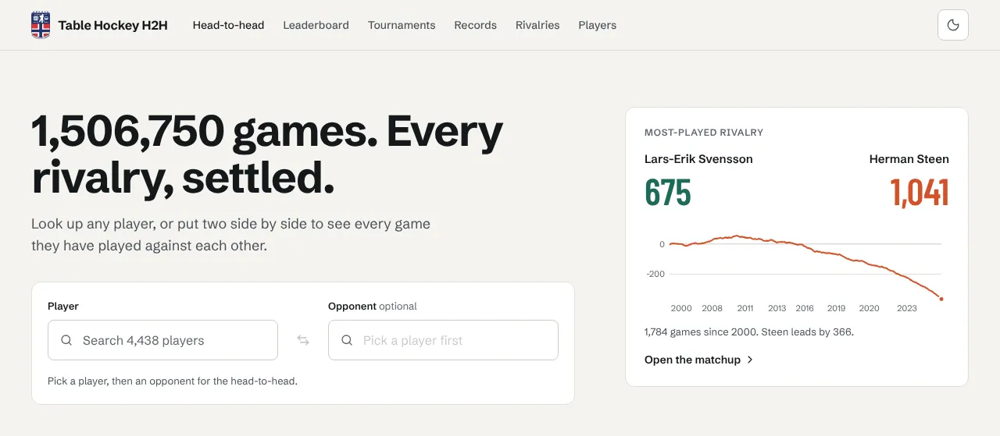
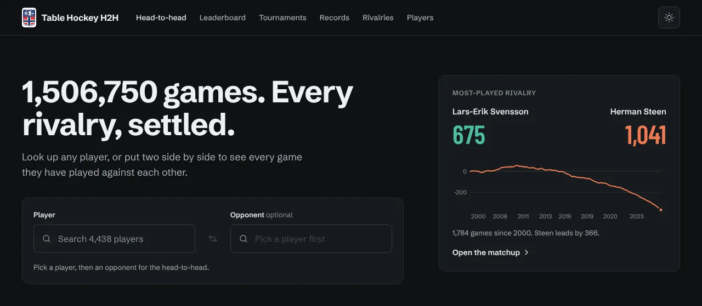
- Search for a player Type a few letters of a name and pick from the list. Players who share a name show a city or birth year so you can tell them apart.
- Add an opponent The list suggests the people your first player has actually played. Pick one and the head-to-head opens. Want just one player? Press View player instead.
- Not sure where to start? The most-played rivalry on record, the top-ranked rivalries and the top-ranked players are all one tap away on the home page.
- Jump anywhere The menu takes you to the leaderboard, tournaments, records, rivalries and players. On a phone it sits behind the button.
Read a head-to-head
The top of a matchup tells you who leads, by how much, and who is likely to win the next one.
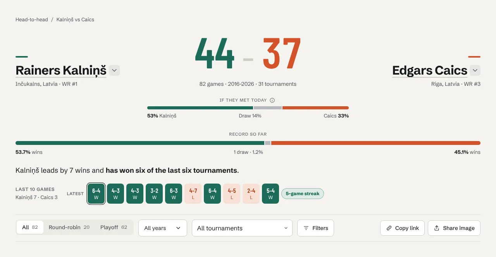
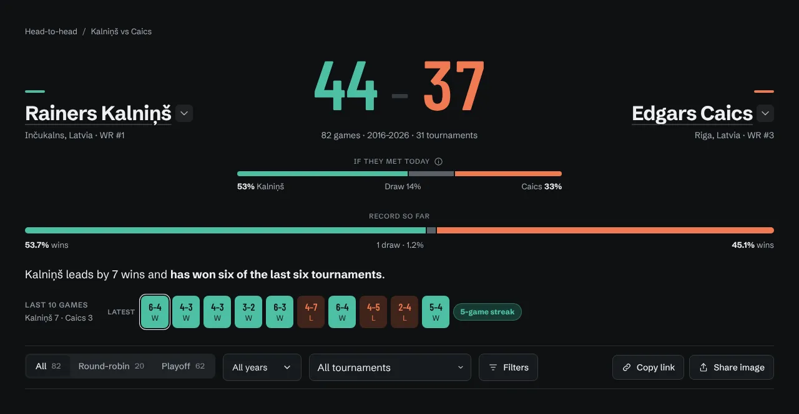
- The record Wins for each player, with the number of games, years and tournaments underneath. The first player is always teal, the second orange, everywhere on the page.
- Swap a player Tap a name to switch to another opponent without starting over, or to open that player's career.
- If they met today The chance of a win, a draw or a loss in one game played now, from both players' ratings. The button explains it.
- Record so far The share of all their games each player has won, and the draws in between. Under it, one sentence sums up the rivalry.
- Last 10 games Newest on the left. Tap a chip to see when and where it was played.
- All, round-robin or playoff Look at group games and knockout games on their own. Playoff games are grouped into series.
- Filters Narrow everything on the page to a range of years, one tournament, a level of event, overtime games or one-goal games.
- Share it Copy link gives you a link to exactly this view, filters included. Share image makes a picture of the record for chats and social media.
Follow the rivalry over time
Below the record, charts show how the rivalry has swung, game by game and event by event.
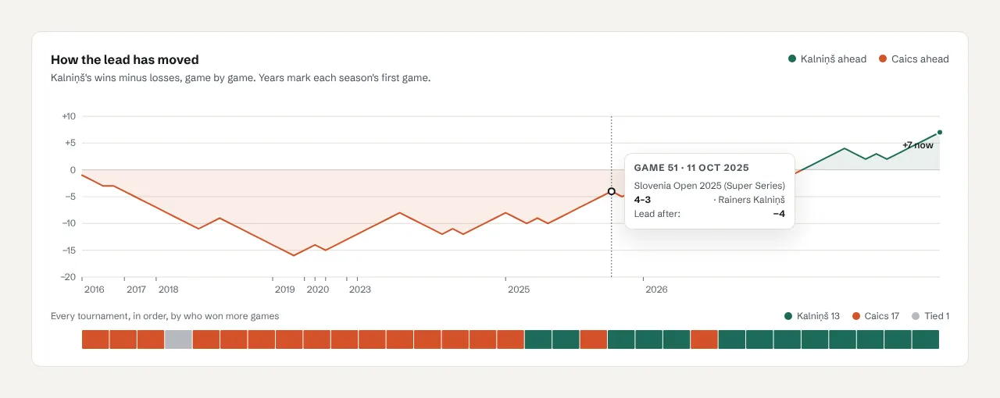
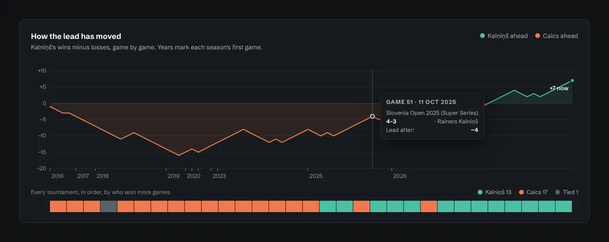
- Who is ahead The line is the first player's wins minus losses. Above zero they lead, below zero the opponent does.
- Point at any game Hover, or tap on a phone, to see the score, the tournament and the running record at that moment.
- Tournament by tournament Each square is one event they both played, coloured by who won more games there.
Further down the same page
- Tale of the tape Goals, one-goal wins, overtime wins, playoff series and streaks, side by side.
- Scorelines A grid of every result. The darker the square, the more often it happened.
- Season by season Who won more of their games each year.
Check every game
Every number on the page traces back to real games. Here is where you find them.
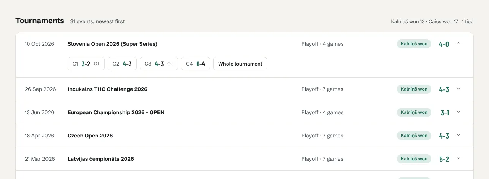
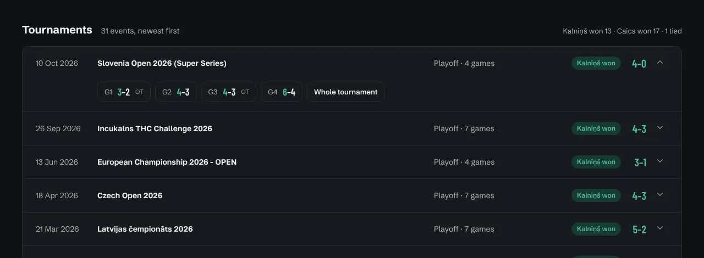
- Each tournament they met at Tap a row to open it. The badge says who came out on top.
- The games Each game of the series with its score, and OT when it went to overtime. Tap one to jump to it.
- Whole tournament Opens the event's own page with the standings and bracket.
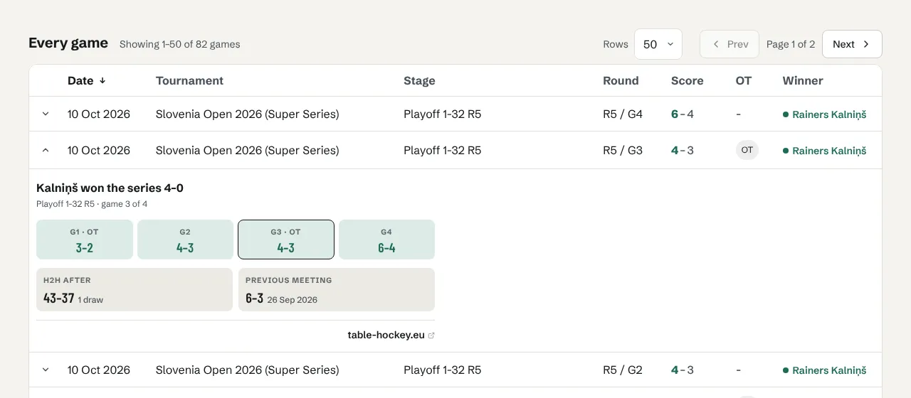
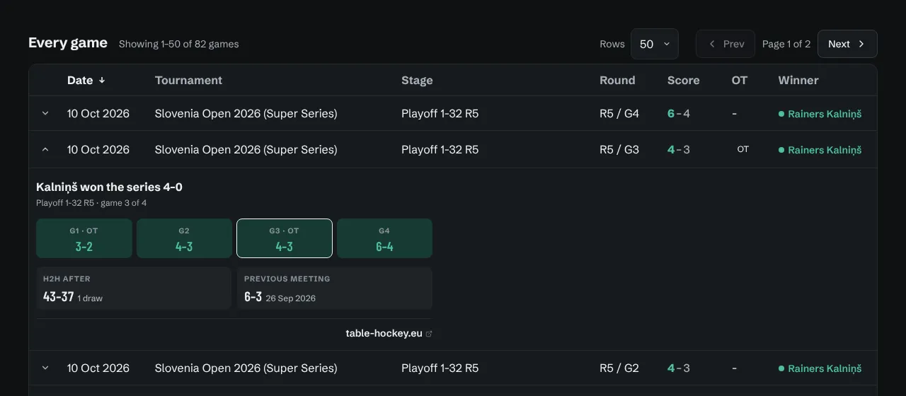
- Sort Newest first by default. Sort by any column, or with the sort menu on a phone.
- Open a game The arrow shows the details.
- Game details The rest of the series, the head-to-head record after this game and when they last met before it.
- More rows Choose how many games to show per page, and page through the rest.
Explore a player's career
Open a player on their own to see everything they have played, against everyone.
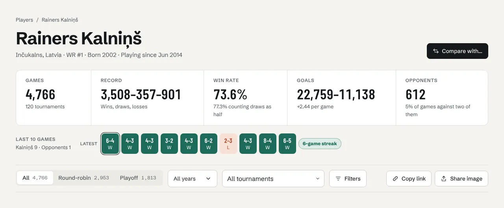
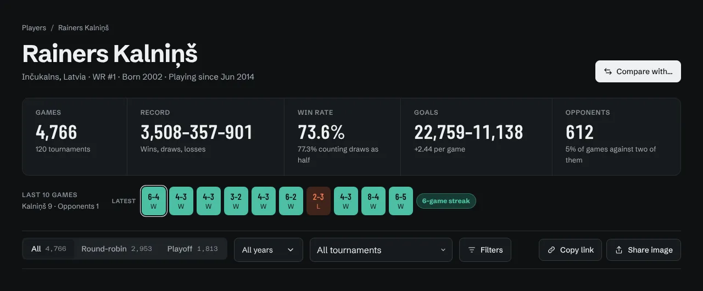
- Who they are Club and country, world ranking, birth year and when they started playing.
- Compare with… Pick an opponent to open the head-to-head.
- The career in five numbers Games, record, win rate, goals and opponents.
- Recent form Their last 10 games against anyone.
- Same filters Round-robin or playoff, years and tournaments work just like on a matchup, and the whole page follows them.
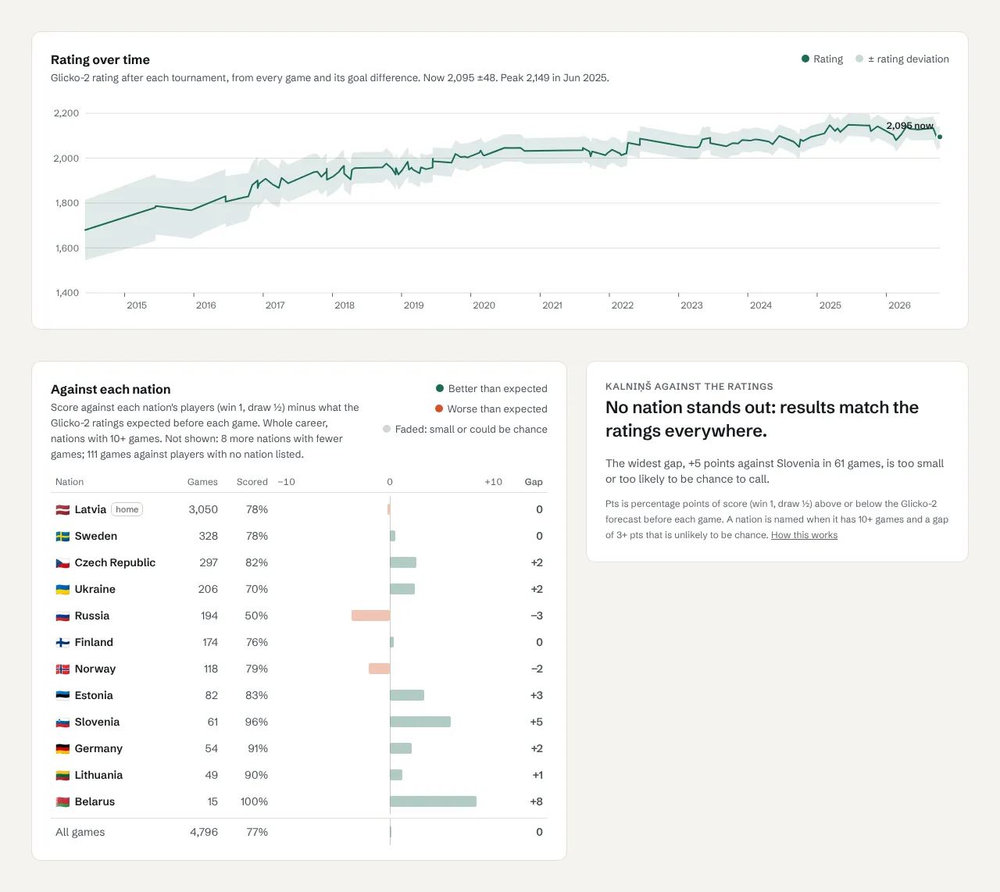
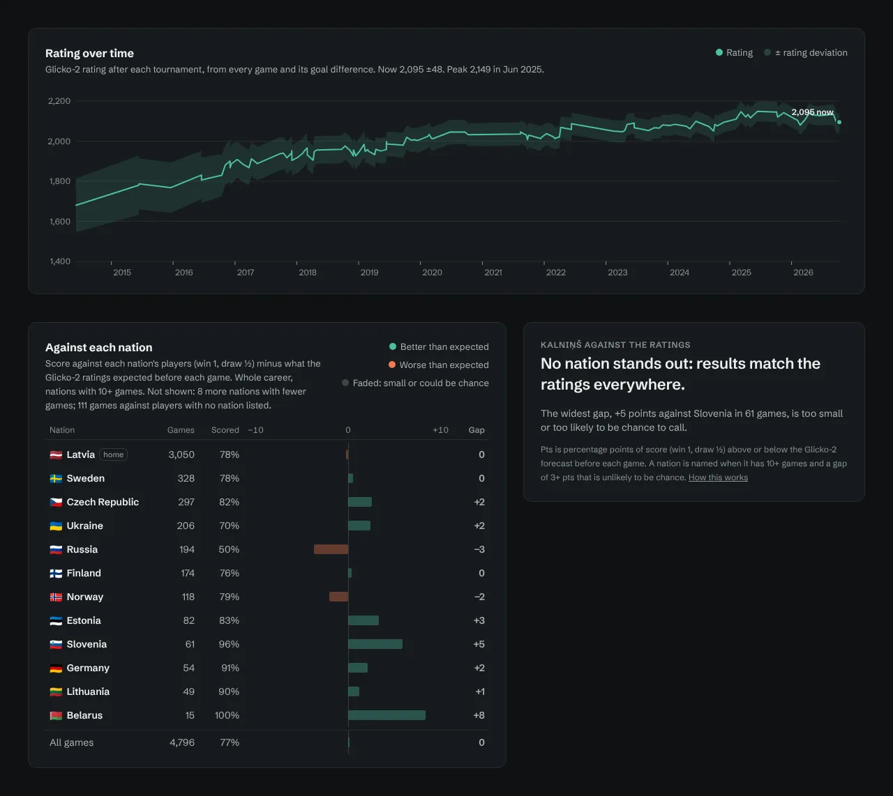
- Rating over time The player's strength after every tournament. Point at the line for the rating on any date.
- The shaded band How sure the rating is. It narrows as they play and widens during a break.
- Against each nation How they did against players from each country, next to what their ratings predicted.
- The verdict Names the nations they beat more, or less, than expected, when the gap is big enough to mean something.
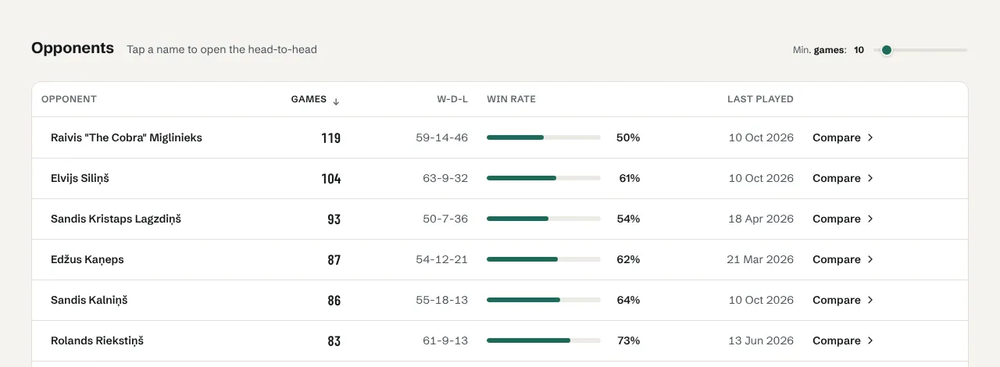
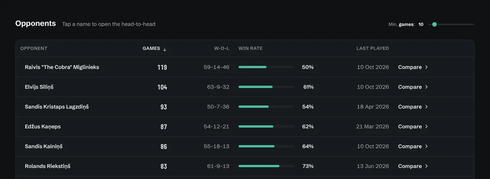
- Minimum games Slide to hide opponents they have only met a few times.
- Sort By games played, win rate or name.
- Compare Opens the head-to-head with that opponent.
Also on player pages
- Win rate by season One bar per year.
- Rival map Every regular opponent as a dot. Tap one to compare.
- Above and below the ratings Who they beat more, and lose to more, than expected.
See who is best right now
The leaderboard ranks every player by rating, worked out from every game on record.
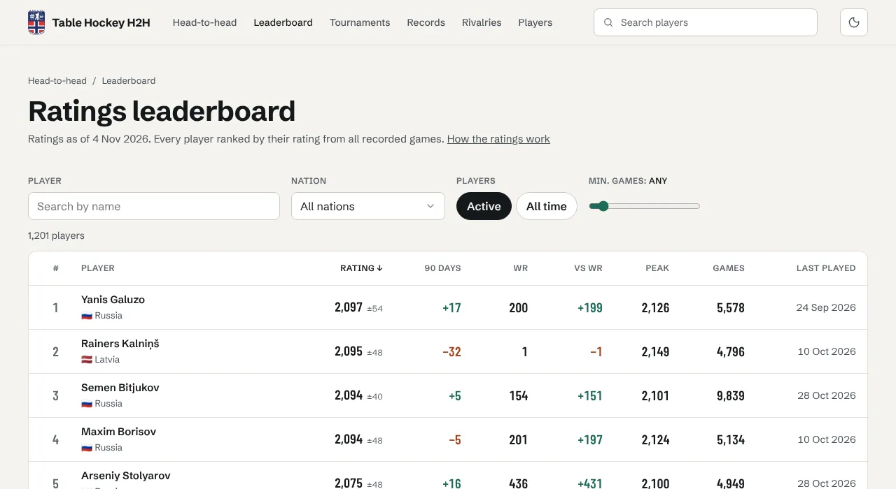
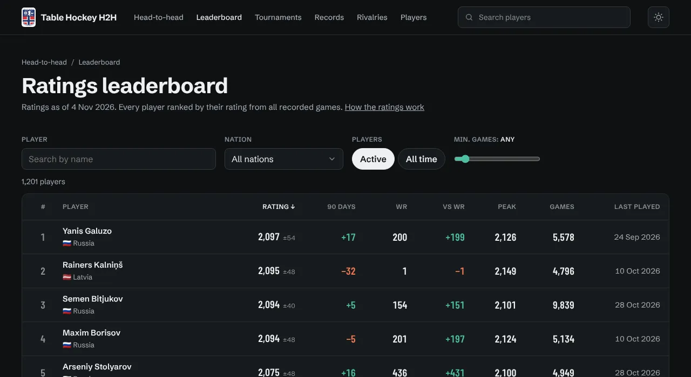
- Find someone Search by name to see where a player stands.
- One nation Show only players from one country.
- Active or all time Active shows people who still play. All time adds the legends.
- Minimum games Hide players with only a handful of games.
- Rating and more Sort by the last 90 days to see who is climbing. WR is the ITHF world rank, and vs WR shows who the world ranking under- or overrates.
Look up a tournament
Tournaments lists every event, newest first. Each one has a page with its podium, upsets, playoffs and groups.
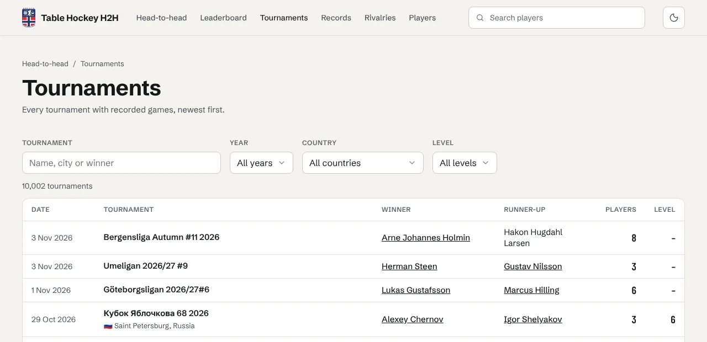
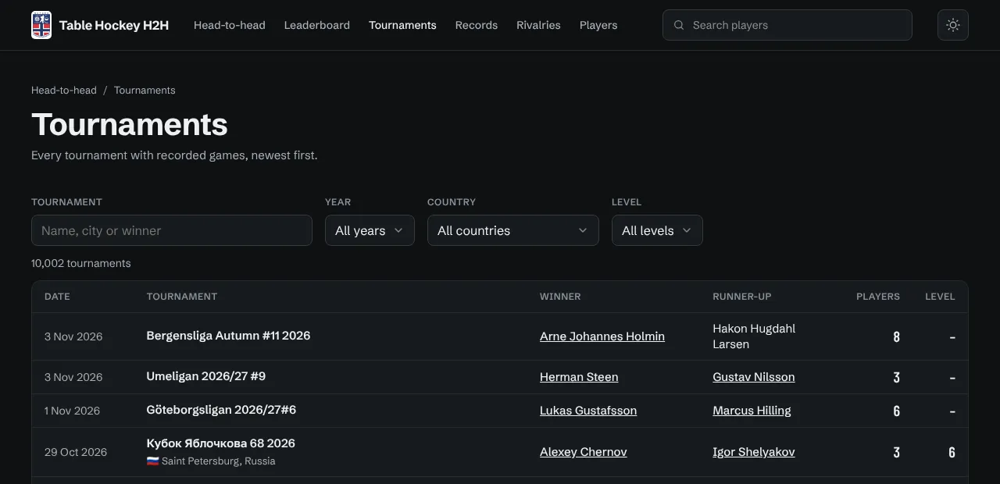
- Search By tournament name, city or winner.
- Filter By year, country and ITHF level.
- Open it Tap a tournament for its page, or a name for that player's career.
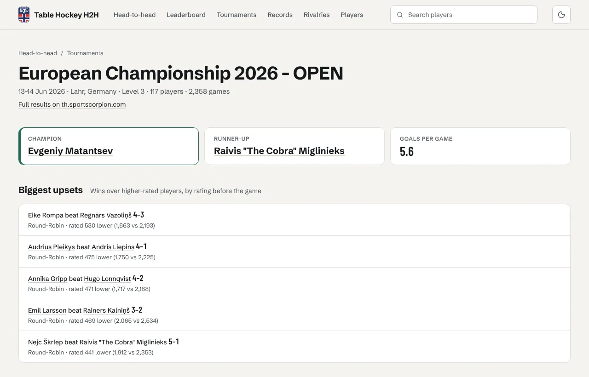
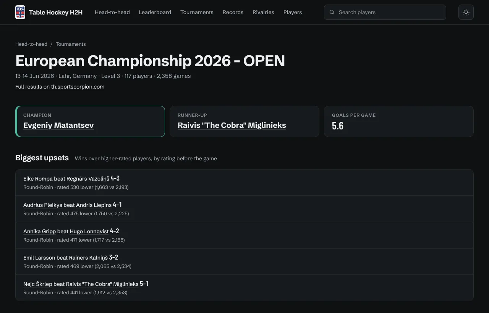
- When and where Dates, place, players and games, with a link to the original results.
- The podium Who won, and how they got there.
- Biggest upsets Wins by the lower-rated player, measured by their ratings before the game.
Browse the records
Records on the home page pulls the most remarkable numbers out of every game on record.
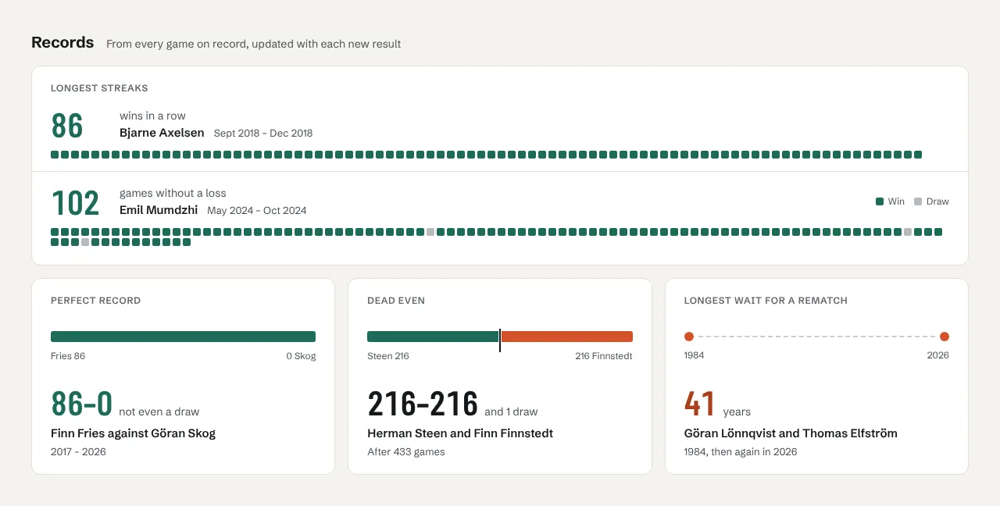
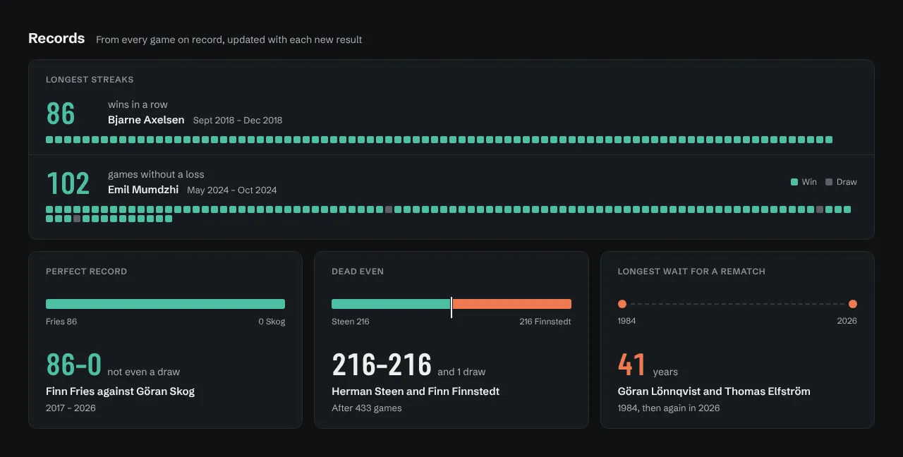
- Longest streaks The most wins in a row, and the most games without a loss. Each square is a game.
- Perfect record The most wins against one opponent without ever dropping a point.
- Dead even The longest rivalry where the two are exactly level.
- Longest wait for a rematch The most years between two meetings.
Good to know
Small things that make the site quicker to use.
-
Search from anywhere
On a keyboard, press / on any page to jump to the player search.
-
Light or dark
The moon and sun button in the top corner switches modes. The site remembers your choice.
-
Recent matchups
The matchups you looked at last wait under the search, one tap away.
-
Every view is a link
The address always matches what you see, filters included, so you can bookmark it or send it on.
-
Compare in one tap
On a player page, tap any opponent in the tables or the rival map to open the head-to-head.
-
How the ratings work
Ratings and forecasts, explained step by step on How the ratings work.
-
What's new
The changelog lists every update to the site, newest first.
-
Where the games come from
Results are collected every day from the sites listed at the bottom of each page.
Ready to settle a rivalry?
Try one of the closest at the top of the world ranking, or search for your own.